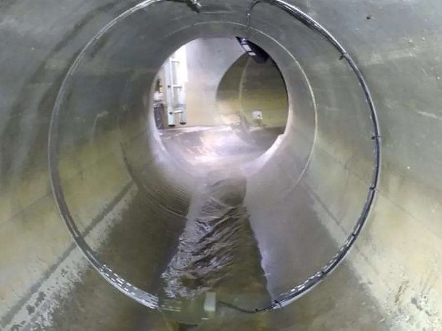

Débitmètres · Surface libre
LOG’RDébitmètre hauteur-vitesse portable autonome
L’ensemble enregistreur et capteur Doppler BELUGA A/V pour les campagnes de mesure en réseau d’assainissement. Platine accrochée en haut du regard, paramétrage et récupération des données en Wi-Fi, sans logiciel.
- Mesures
- Hauteur, vitesse, débit
- Autonomie
- 2 à 10 semaines selon la cadence
- Communication
- Wi-Fi, téléphone ou PC
- Enregistrement
- Fichier .csv
Idéal pour
- Diagnostic réseau
- Campagnes de mesure
- Recherche d’eaux claires parasites
- Bilans de débit
- Regards sans alimentation
LeasingDisponible à l’achat ou en leasing, par mensualités. Comment ça marche
Points forts
Un débitmètre de campagne qui se pose en quelques minutes et se pilote depuis un téléphone.
- Sans logicielParamétrage, mesures en temps réel et récupération des données en Wi-Fi.
- Sans génie civilLe capteur se pose au fond du conduit, sans déversoir ni venturi.
- AutonomeBatterie Li-Ion interne, seconde batterie ou batterie 12 V externe en option.
- Simple à démarrerDeux boutons lumineux : mise sous tension et activation du Wi-Fi.
- Enregistrement au choixDémarrage immédiat ou différé, durée et intervalle de mesure réglables.
- RobusteBoîtier polycarbonate IP67, platine inox, connecteurs militaires.
Principe de mesure
Le capteur BELUGA A/V, posé au fond du conduit, mesure la vitesse par effet Doppler et la hauteur d’eau par pression. Le LOG’R calcule le débit à partir de la forme et des dimensions du conduit saisies au paramétrage.
Les mesures de hauteur, de vitesse et de débit s’enregistrent à la cadence choisie. L’opérateur les consulte en temps réel et les récupère en Wi-Fi, sans descendre dans le regard.
- Vitesse − 2 à + 6 m/s, dès 2 cm d’eau
- Niveau 0 à 2 m, ± 0,25 % de la pleine échelle
- Suivi de la tension batterie et de l’état de l’enregistrement
Applications
Conçu pour les diagnostics sur des périodes déterminées.
- Diagnostic des réseaux d’assainissementCampagnes de mesure de quelques jours à plusieurs semaines.
- Recherche d’eaux claires parasitesComparaison des débits de nuit et de temps sec.
- Contrôle d’un débitmètre en placeMesure comparative ponctuelle sur un point existant.
- Études de bureaux d’étudesDonnées exportées en .csv pour le traitement.
Caractéristiques
Autonomie donnée pour la batterie standard et pour l’option double batterie.
| Boîtier | Polycarbonate IP67, platine support inox |
|---|---|
| Entrées | RS485 pour le capteur, alimentation pour chargeur ou batterie 12 V externe |
| Communication | Wi-Fi : téléphone, tablette ou ordinateur |
| Paramétrage | Forme et dimensions du conduit, démarrage immédiat ou différé, durée et intervalle |
| Alimentation | Batterie Li-Ion interne 5 Ah, seconde batterie en option |
| Autonomie à 1 mesure / min | 2 semaines (4 avec double batterie) |
| Autonomie à 1 mesure / 5 min | 5 semaines (10 avec double batterie) |
| Dimensions | 280 × 180 × 131 mm, 1,91 kg avec une batterie |
| Vitesse | Doppler 1 MHz, − 2 à + 6 m/s, ± 1 % ± 0,01 m/s |
|---|---|
| Hauteur d’eau minimale | 2 cm |
| Niveau | Pression différentielle, 0 à 2 m, ± 0,25 % PE, résolution 1 mm |
| Température de l’eau | − 40 à + 80 °C |
| Boîtier | PVC, IP68, 153 × 43 × 22 mm |
| Câble | PUR avec cartouche dessiccante, 5 ou 10 m |
Téléchargements
Questions fréquentes
Les questions que nous posent le plus souvent les exploitants et les bureaux d’études.
Faut-il un logiciel pour paramétrer le LOG’R ?
Non. Il se paramètre et se consulte en Wi-Fi avec un téléphone, une tablette ou un ordinateur portable, sans logiciel spécifique.
Quelle autonomie prévoir pour une campagne ?
Avec la batterie standard : 2 semaines à une mesure par minute, 5 semaines à une mesure toutes les 5 minutes. L’option double batterie double ces durées ; une batterie 12 V externe peut aussi être raccordée.
Comment s’installe-t-il ?
Le capteur se fixe au fond du conduit, la platine du LOG’R s’accroche en haut du regard. Aucun génie civil n’est nécessaire.
Peut-on suivre les mesures sur place ?
Oui : en Wi-Fi, vous voyez en temps réel la hauteur, la vitesse, le débit, la tension de la batterie et l’état de l’enregistrement.